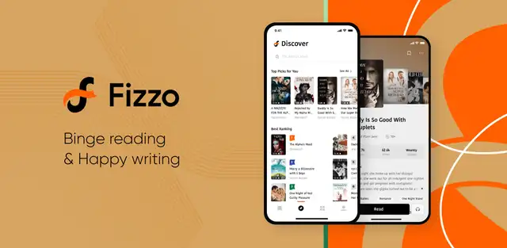

Fizzo 五年迭代史：一款字节系阅读 App 的海外生长逻辑
从 2021 年多语言上线到今天的 AI 推荐生态，Fizzo 的版本节奏里藏着字节跳动做海外免费阅读产品的完整思路。
现状：现在这版 Fizzo 是什么样
我最近重新打开 Fizzo，是被它的推荐流吓了一跳——划了十五屏，没有一条重复题材的，而且每本书的简介下面都挂着"你可能还喜欢"的精准关联。更关键的是，我换了一台手机登录同一个账号，书架、收藏、甚至三天前看到一半的那本言情小说的精确章节进度，一秒钟就同步过来了。
这就是现在的 Fizzo官网：一个把字节跳动推荐算法体系完整搬到海外免费阅读赛道的产品。它不只是一个看书的 App，而是一个带社区属性的内容消费生态——你可以关注作者、评论章节、甚至去 Writing Center 自己写东西。听书模式也已经是标配，依赖系统 TTS 引擎就能把一整本小说念出来。
但它不是一步到位长成这样的。
来路：从 2.3.5 说起
翻了一下Fizzo文档才能确认的最早版本节点是 2.3.5，2021 年 12 月，加了多语言设置功能。在此之前的历史，样本文档没有提——恰恰说明那段时间 Fizzo 可能还在跑东南亚单一市场的冷启动，界面语言和地区绑定死了，用户没有选择权。
2.3.5 这个版本号很有意思。通常来说，一个产品的 2.x 大版本意味着核心功能框架已经稳定了，后面的小版本是填充和打磨。2.3.5 加多语言，说明团队在那个时间点决定从印尼单一市场转向更广阔的东南亚甚至全球——英语和印尼语是第一批支持的语言，之后陆续补充。地区偏好也从这个版本开始和内容推荐挂钩：不同地区的热门榜单分开算，版权受限的作品会根据地区自动隐藏。
多语言之后的版本迭代，样本文档里没有给具体的版本号和日期，但从功能成熟度可以反推：
第一步是账号体系的补全。手机号注册是最早的入口，后来加了邮箱和 Google、Facebook、Apple ID 的第三方登录。这个顺序背后的市场逻辑很清晰：印尼用户手机号渗透率高，先抓最省事的入口；做全球化之后必须补邮箱和跨平台账号对接。游客模式也是这个阶段加的——不想注册也能先用着，把门槛降到最低，要装的话从官方下载拿安装包就行，但游客数据只存在本地，卸载就没了，这是典型的"先拉留存再逼注册"策略。
第二步是数据同步的打通。从样本里的"跨设备共享范围"可以看到，收藏列表、阅读进度、关注的作者、评论记录这四项是跨设备同步的核心。注意，离线下载的文件不同步（每台设备独立），应用界面设置也不同步（阅读主题等需要每台重新设）——这不是技术做不到，而是产品优先级的判断：用户最在意的是"我看到哪儿了"和"我收藏了什么"，下载的文件可以重下，界面设置重新调一次成本不高。
第三步是社区功能的叠加。关注作者、评论章节、Writing Center 创作平台——这些不是阅读 App 的标配，而是字节跳动把抖音/TikTok 的社区玩法搬到了阅读赛道。创作者可以用自己熟悉的语言在 Writing Center 发文，读者可以互动，这形成了一个闭环：好内容进来，算法推给对的人，人再去评论关注，激励作者继续写。
第四步是听书和 AI 推荐的精细化。听书模式在样本里是成熟功能，但依赖系统 TTS 引擎，说明团队没有自己去做语音合成引擎——这和字节在抖音/TikTok 上自己做音视频引擎的做法完全不同，再次说明 Fizzo 团队在成本和自研之间选了性价比。AI 推荐则是另一回事：明确写了"基于字节跳动成熟的推荐算法体系"，这是从抖音直接搬过来的核心能力，阅读历史、收藏、跳过、题材标签、社交信号全链路打通，这一块是团队一直在死磕的东西。

规律：从迭代节奏看团队在死磕什么
把上面这些时间线串起来，一个很清晰的优先级排序就出来了：
最上层——推荐算法，一直在打磨。从 2.3.5 到现在，AI 推荐的信号从基础的阅读历史扩展到了跳过翻页、题材偏好标签、社交信号，而且样本文档里专门有一篇"AI 个性化推荐系统"来解释它的工作原理——这是团队最有自信也最愿意投入的地方，毕竟字节的算法能力是核心护城河。
第二层——账号同步和社区粘性，逐步加强。从单设备到跨设备同步，从纯阅读到社区互动，从只看不写到 Writing Center，每一步都是在提高用户的"迁移成本"：你收藏的书、关注的作者、写的评论，换个 App 就全没了，所以别走。
最下层——一些看起来"应该有"但一直没做的东西。游客模式数据不保留、应用界面设置不同步、听书依赖系统 TTS、离线下载不跨设备——这些不是技术障碍，而是产品判断：做了成本不低，但对核心留存指标的提升不明显，所以排在后面甚至可能一直不做。
还有一个有意思的观察：样本文档里有一整篇"应用崩溃或卡顿的排查方法"，七步排查法写到卸载重装，甚至细分到"进入某本书崩溃"和"听书模式崩溃"两种场景。这说明崩溃问题在某个阶段可能是高频出现的——要么是早期版本质量问题，要么是快速迭代中新功能引入了不稳定。团队用"给用户写排查手册"的方式来缓解，而不是停下来彻底解决，这也是一种优先级取舍。
预判：照这个路线，下一步大概率走向哪
从迭代规律推，我觉得有三个方向值得关注：
第一，AI 能力会继续下沉。现在的 AI 推荐还是"把合适的书推给合适的人"这个层面，下一步很可能是大模型接入——比如根据你的阅读偏好自动生成书单、总结某本书的核心剧情、甚至直接帮你在一本书里"找到你上次看到的那个精彩段落"。字节在大模型上的投入，Fizzo 作为海外内容消费场景，一定会吃到红利。
第二，听书的自研可能会提上日程。现在依赖系统 TTS 是权宜之计——不同手机的 TTS 引擎质量差异很大，同样一本书在不同设备上的听书体验天差地别。当 Fizzo 的用户量足够大、听书的使用数据足够多的时候，自研 TTS 或者和成熟的语音合成服务深度整合，是大概率事件。
第三，全球扩张的加速。2.3.5 版本加了英语和印尼语，但样本文档里已经预留了"其他根据地区适配的语言"的位置。字节的全球化能力在 TikTok 上已经验证过，Fizzo 的阅读内容本身版权敏感度比短视频低，扩张速度可能比想象中快。
当然这些只是从迭代规律推的，不当官方口径传。产品的方向最终还是要由团队的资源分配和市场反馈来决定，但从 Fizzo 这五年的版本节奏来看，它的核心逻辑一直很清晰：用字节的算法能力做免费阅读，用社区粘性留住用户，用全球化摊薄内容成本。这条路能走多远，取决于团队愿意在"下沉市场深耕"和"向上走做付费/精品内容"之间怎么选。